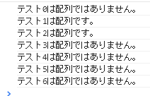
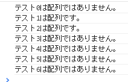

配列判定は「変数 instanceof Array」で行う。
ソースコード
出力

※instanceof関数は配列だけなくオブジェクトに対しても判定できる。自作オブジェクトにも対応してくれるようである。
ソースコード
$(document).ready(function(){
var val;
//テスト0
if(val instanceof Array){
console.log('テスト0は配列です。');
}else{
console.log('テスト0は配列ではありません。');
}
//テスト1
val=new Array();
if(val instanceof Array){
console.log('テスト1は配列です。');
}else{
console.log('テスト1は配列ではありません。');
}
//テスト2
val=[0,1,2,3,4];
if(val instanceof Array){
console.log('テスト2は配列です。');
}else{
console.log('テスト2は配列ではありません。');
}
//テスト3
val=123;
if(val instanceof Array){
console.log('テスト3は配列です。');
}else{
console.log('テスト3は配列ではありません。');
}
//テスト4
val='a';
if(val instanceof Array){
console.log('テスト4は配列です。');
}else{
console.log('テスト4は配列ではありません。');
}
//テスト5
val=Date();
if(val instanceof Array){
console.log('テスト5は配列です。');
}else{
console.log('テスト5は配列ではありません。');
}
//テスト6
val=null;
if(val instanceof Array){
console.log('テスト6は配列です。');
}else{
console.log('テスト6は配列ではありません。');
}
});
出力
